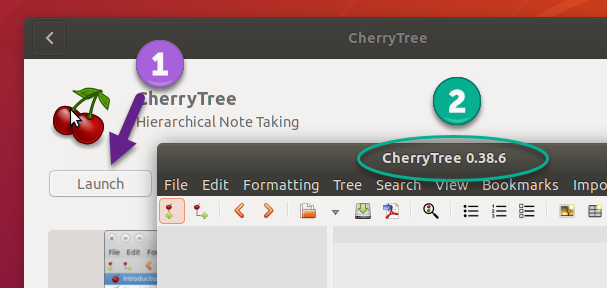
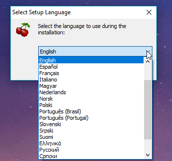
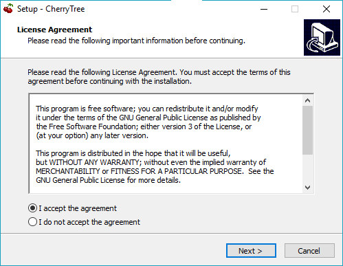
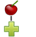
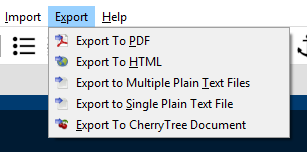

Introduction
Cherrytree is a free and open source, hierarchical, note-taking application. It can store text, images, files, links, tables, and executable snippets of code. This application is under active development. Details regarding updates can be found in the changelog.
If you have questions please ask in the forum, or visit feedback webpage to provide feedback.
About This Manual
This manual was written for Cherrytree version 0.38.6. Please check the website for the latest version.
Get Involved
New contributors are welcome! We recommend that you contact the project’s maintainer before starting.
Development
Please visit the git repository to get started.
The current version of Cherrytree requires:
-
python2
-
python-gtk2
-
python-gtksourceview2
-
p7zip-full
-
python-dbus
-
python-enchant
-
python-chardet
After cloning, run in the top folder ./cherrytree or python2 cherrytree.
Development is currently focused on porting from Python to C++/GTKmm. These changes are located on the master branch within the future directory. The latest, stable release can also be found on the master branch. The pygi branch is a discontinued attempt to port to the python bindings for GTK3. It failed due to missing pygi bindings for a core clipboard functionality
Developers can help by addressing bugs submitted to the repository’s issues page.
Testing
If you find a bug, please check to see if it has already been reported within the project’s issues. If the error is unreported, please create a new issue providing as much detail as possible.
If needed, here is a short guide on writing a proper GitHub issue.
Writing
The web version of the Cherrytree user manual is written using asciidoctor and is maintained here. Contributors can help with writing and proofing, or by porting the manual to a ".ctb" file intended to demonstrate the potential of Cherrytree.
Translation
Please contact the project’s maintainer to add or edit translations.
Donations
Join the Cherrytree Supporters!
Donations are appreciated and can be made from the Cherrytree website.
Installation
Cherrytree is available for Linux and Windows.
Installing on Fedora and other Red Hat derivatives
-
Download the latest installer with a ‘.rpm’ extension from the downloads webpage.
-
Open a terminal and navigate to the directory where your installer is located.
-
Type the following command, replacing “cherrytree.rpm” with the name of your installation file:
sudo rpm -Uvh --force cherrytree.rpm. Provide your password when prompted to begin the installation, as shown in Figure 2.01.Figure 2.01
Installing on Ubuntu and other Debian derivatives
Cherrytree can be installed to Ubuntu via the "Ubuntu Software" application or the command line.
Option One: Ubuntu Software
A PPA (Personal Package Archive) must be added to ensure that the latest version of Cherrytree is installed through Ubuntu Software.
-
Open the "Software and Updates" application. Figure 2.02
Figure 2.02 -
Navigate to the "Other Software" tab and click the "Add" button. Figure 2.03
Figure 2.03 -
Paste the following snippet
ppa:giuspen/ppainto the textbox, then click the "Add Source" button and enter your password when prompted. Figure 2.04Figure 2.04 -
Confirm that the PPA has been added, then close the window. Figure 2.05
Figure 2.05
-
When prompted, click the "Reload" button and enter your password when prompted to install updates from the newly added source. Figure 2.06
Figure 2.06
-
Open Ubuntu Software and search for Cherrytree, then select the application and click the "Install" button. Provide your password when prompted to begin the installation. Figure 2.07
Figure 2.07 -
After the application is installed, click "Launch" and confirm that the latest version is installed." Figure 2.08
Reference the changelog to determine the latest version.Figure 2.08
Option Two: Command Line
-
Download the latest installer with a ‘.deb’ extension from the downloads webpage.
-
Open a terminal and navigate to the directory where your installer is located.
-
Type the following command, replacing “cherrytree.deb” with the name of your installation file:
sudo dpkg -i cherrytree.deb. Provide your password when prompted to begin the installation. Figure 2.09Figure 2.09
Installing on Windows
-
Download and run the latest installer with an ‘.exe’ extension from downloads webpage.
-
Select a language and click the ‘Next’ button. Figure 2.10
Figure 2.10
-
Accept the license, then click the ‘Next’ button. Figure 2.11
Figure 2.11
-
Select a directory for the application to be installed and click the ‘Next’ button. Figure 2.12
Figure 2.12
-
Select ‘Create a desktop shortcut’ if you wish to have a shortcut. Click the ‘Next’ button. Figure 2.13
Figure 2.13 -
Review the provided summary, then click ‘Install’ if you are ready to proceed. Figure 2.14
Figure 2.14
-
Click ‘Finish’ to complete the installation. Figure 2.15
Figure 2.15
Note: If you have a previous version of Cherrytree installed, an error may occur when trying to overwrite “dbus-daemon.exe”. If so, please skip the overwrite and restart your computer, then try again.
Quick start
This brief quick start guide will teach you about the following:
-
User Interface
-
Nodes
-
Core Text Editing
-
Inserting images
-
Saving
-
Exporting
Interface
Cherrytree’s interface is made of four sections. These sections are highlighted in Figure 3.01:

Menu Bar (Red)
The menu bar contains the following menus:
-
File - Document-management features such as opening, saving, printing, and exporting.
-
Edit - Application preferences, basic copy and paste features, and object insertion features.
-
Formatting - Text formatting options.
-
Tree - Node management features.
-
Search - Features for search and replace.
-
View - Interface options.
-
Bookmarks - Bookmarks will be listed in this menu. You can add bookmarks by right-clicking a node within the tree view and selecting the “Add to Bookmarks” option.
-
Import - Cherrytree can import from a variety of sources including KeepNote, NoteCase, Tomboy, HTML files, others.
-
Export - Cherrytree documents can be exported to HTML, PDF, and Plain Text.
-
Help - Contains “Check for updates”, an “About” section, and a link to the online manual."
Toolbar (Purple)
The toolbar has many commonly used options for managing nodes, formatting text, and inserting objects.
The toolbar can be edited by clicking “Edit” within the menu bar and navigating to “Preferences > Toolbar”
The size of the toolbar icons has been increased within Figure 3.01. Icon size can be changed by clicking “View” in the menu bar, then selecting the “Increase Toolbar Icon Size” option for bigger icons or “Decrease Toolbar Icon Size” for smaller icons.
Tree View (Green)
Cherrytree’s tree view shows the document’s hierarchical structure of nodes.
Editor (Yellow)
The editor is used to read, write, edit, and delete notes. Click and hold the divider between the tree view and editor, then drag the mouse left or right to resize the two windows.
To change the color scheme for plain text documents and code, click the “Edit” button within the menu bar and navigate to “Preferences > Plain Text and Code,” then adjust the Style Scheme option. To change the color scheme of Rich Text documents, click “Edit”, navigate to “Preferences > Rich Text” and adjust the Theme settings.
Node Management
Cherrytree allows you to organize notes using a tree structure.
Creating Your First Node
-
Click the “Add Node” button, shown in Figure 3.03. within the menu bar.
Figure 3.03
-
Within the "New Node Properties" menu, shown in Figure 3.04 give your node a name and select a node type, then click the “OK” button. If you’re unsure which node type to use, please view the node type section of this manual.
Figure 3.04
Node Menu
Right-click a node to display a menu of the options available to it. Figure 3.05

Commonly used options include:
-
Add Node - Create a node on the same level of hierarchy as your current node.
-
Add SubNode - Create a child node under the currently selected node.
-
Change Node Properties - Edit the settings of the current node.
-
Delete Node - Delete the currently selected node.
Insert Objects
Objects can be inserted from the menu bar under "Edit", Figure 3.06, or the toolbar, Figure 3.07.
The following objects can be inserted into Cherrytree documents:
-
Image
-
Table
-
CodeBox
-
File
-
Link
-
Anchor
-
TOC (Table of Contents)
-
Timestamp
-
Special Character
-
Horizontal Rule
Save Your Notes
-
You can save your document by holding "Ctrl" and pressing "s" or clicking "File" within the menu bar and selecting the "Save" option, as shown in Figure 3.08.
If you have previously saved the current document, you do not need to perform steps 2 and 3.
Figure 3.08 -
If this is your first time saving the current document, you will be prompted to select a save type, as shown in Figure 3.09. If you are unsure which type to select, please visit the save section for more details.
Figure 3.09 -
After you have selected a type you will be prompted to give your document a name and select a folder to save it to. Figure 3.10
Figure 3.10
Export the Document
-
To export your document, click "Export" within the menu bar and select a type of document type. Figure 3.11
Figure 3.11
-
When prompted, select the scope of content to be exported then click the "OK" button. Figure 3.12
Figure 3.12 -
After you have selected a type you will be prompted to give your document a name and select a folder to save it to. Figure 3.13
Figure 3.13
Files
Documents can be managed from the "File" menu, shown in Figure 4.01, or the toolbar, Figure 4.02.

Creating and Opening
Cherrytree opens to the same state as when it last closed. If this is your first time using the application, it will open a new document by default. To create a new document, click "File" within the menu bar and select the "New Instance" option.
Saving
Printing
Searching
Importing
Exporting
Nodes
In computer science, a tree is a data structure consisting of nodes which are connected by edges. In the tree shown in Figure 5.01, "my_book.ctb" is the root node. "Part 1" is one of the three child nodes that belong to "my_book.ctb" and is also the parent node of "Chapter 1", "Chapter 2", and "Chapter 3".

Figure 5.01 might look like Figure 5.02 in Cherrytree, where the document name is the root node.
Content
Creating Nodes
Managing Nodes
Choosing a Node Type
Plain Text Content
Rich Text Content
Syntax Highlighting Content
Bookmarking
Node options
Text
Elements
Formatting
Lists
Alignment
Objects
Images
Content
Drag and drop content
Copy and paste content
Toolbar content
Tables
content
Codebox
content
The following Codebox formats are available:
-
ada
-
asp
-
awk
-
bibtex
-
boo
-
c
-
c-sharp
-
cg
-
changelog
-
chdr
-
clisp
-
cmake
-
cpp
-
css
-
d
-
desktop
-
diff
-
docbook
-
dosbatch
-
dot
-
dpatch
-
dtd
-
eiffel
-
erlang
-
fcl
-
forth
-
fortran
-
fsharp
-
gap
-
gettext-translation
-
glsl
-
go
-
groovy
-
gtk-doc
-
haddock
-
haskell
-
haskell-literate
-
html
-
idl
-
ini
-
java
-
js
-
latex
-
libtool
-
lua
-
m4
-
makefile
-
mallard
-
markdown
-
markdown-extra
-
msil
-
nemerle
-
nisi
-
objc
-
objective-caml
-
ocl
-
octave
-
ooc
-
pascal
-
perl
-
php
-
pkgconfig
-
powershell
-
prolog
-
python
-
python3
-
r
-
rpmspec
-
ruby
-
rust
-
scala
-
scheme
-
sh
-
sparql
-
sql
-
t2t
-
tcl
-
texinfo
-
vala
-
vbnet
-
verilog
-
vhdl
-
xml
-
xslt
-
yacc
-
yaml
Executing
Files
Content
Links
Content
Anchors
Content
Table of Contents
Content
Time Stamps
Content
Special characters
Content
Settings
Text and Code
Text
Rich Text
Plain Text and Code
Tree 1
Tree 2
Fonts
Links
Toolbar
Keyboard Shortcuts
Miscellaneous
Contributors
Cherrytree is written and maintained by Giuseppe Penone.
Development:
Writing:
-
Robert Boudreau
-
Ellie Borden
Translation:
-
Armenian (Seda Stamboltsyan, up to date)
-
Chinese Simplified (Channing Wong, TO BE UPDATED)
-
Czech (Pavel Fric, up to date)
-
Dutch (Luuk Geurts, up to date)
-
English (default)
-
French (Klaus Becker, up to date)
-
Finnish (Henri Kaustinen, up to date)
-
German (Frank Brungräber, up to date)
-
Greek (Delphina, up to date)
-
Italian (Vincenzo Reale, up to date)
-
Japanese (Piyo, up to date)
-
Lithuanian (Zygis, TO BE UPDATED)
-
Polish (Marcin Swierczynski, up to date)
-
Portuguese Brazil (TO BE UPDATED)
-
Russian (Andriy Kovtun, up to date)
-
Slovenian (Erik Lovrič, up to date)
-
Spanish (Daniel MC, up to date)
-
Turkish (Ferhat Aydin, TO BE UPDATED)
-
Ukrainian (Andriy Kovtun, up to date)
Artwork:
-
OCAL
-
Zeltak
-
Angelo Penone
All email addresses can be found in Cherrytree by selecting ‘Help > About > Credits’ from the menu.
Supporters
-
Andy Lavarre (United States) donated €350 \{android, creation/modification per node + search filter}
-
Miguel Latorre (Spain) donated €240
-
DistroWatch.com (International) donated €200
-
Alan M. (United States) donated €100
-
Mario (Austria) donated €100
-
1001bricks (France) donated €80 \{custom keyboard shortcuts}
-
Michael Moyer (United States) donated €70
-
Charles Leis (United States) donated €65
-
Rene Gommes (Italy) donated €55
-
Samir Derzic (Germany) donated €55
-
Stuart Krivis (United States) donated €55
-
Barbara Buri (Switzerland) donated €50
-
Ger de Gooijer (Netherlands) donated €50 \{mark node in the tree with bold or color}
-
Lisardo Sobrino (Spain) donated €50
-
Manuel Pacheco (Spain) donated €50
-
Rudy Witt (Canada) donated €50
-
Steve Davis (United States) donated €50
-
Valentina Ermolova (Russia) donated €47
-
Édipo Gonçalves (Brazil) donated €45
-
Ted (Germany) donated €45 \{same tree visible twice for drag n drop}
-
James Brady donated €43,24
-
Andrew Marquis (United Kingdom) donated €40
-
Jack Downes (United States) donated €40
-
Sylvain Pasche (Switzerland) donated €40
-
Thomas Ludwig (Germany) donated €40
-
William Haschke (United States) donated €40
-
Juan Rivera (Spain) donated €35
-
Marian Förster (Germany) donated €35
-
Glen Garfein (United States) donated €31,25
-
Jt Spratley (United States) donated €31
-
Christoph Rottleb (Germany) donated €30
-
Fabien Perdu (France) donated €30 \{keyboard shortcut for subscript and superscript or a way to configure them}
-
Giulio Achilli (Italy) donated €30
-
Ivar Christopher (United States) donated €30
-
Jan Axelsson (Sweden) donated €30 \{nodes icons or colors and nodes separator}
-
Jesse Sloane (South Korea) donated €30
-
Johnathan Moseley (United States) donated €30
-
Josh Hanson (United States) donated €30 \{sub item pressing the TAB key in lists}
-
Luis Ribeiro (Portugal) donated €30
-
MC Merchants (United States) donated €30
-
Michael Jabbour (Austria) donated €30
-
Miguel Gestal (Spain) donated €30
-
Ravinderpal Vaid (United States) donated €30
-
Steven Rockefeller (United States) donated €30
-
Sebastian Prodan (Germany) donated €26
-
Michael Turner (United States) donated €25,99
-
Bruce Ashford (United Kingdom) donated €25
-
Claus Otterpohl (Germany) donated €25
-
Georg Fellmann (Germany) donated €25
-
James Lin (United States) donated €25
-
John DeOrian (United States) donated €25 \{bulleted list indentation hierarchical, Integrate LaTeX (mathematical formulas)}
-
Miguel Vilar (Switzerland) donated €25
-
Soren ONeill (Denmark) donated €25
-
Wolfgang See (Germany) donated €25
-
Jaroslav Polacek (Czech Republic) donated €22,22
-
Andreas Strömdahl (Sweden) donated €20
-
Andrew Golovanov (United States) donated €20
-
Anthony Miller (United Kingdom) donated €20
-
David Butcher (United Kingdom) donated €20
-
David Condray (United States) donated €20
-
Emmanuel Chantreau (France) donated €20
-
Evan Tran donated €20
-
Fabio rahamim (Israel) donated €20
-
Francesco Zaniol (Australia) donated €20
-
Frank Dehmel (Germany) donated €20
-
Frank Nash donated €20
-
Gaurav Pal (United Kingdom) donated €20
-
Gene Clem (United States) donated €20
-
Geoffrey Munn (United Kingdom) donated €20
-
Hermann Grell (Germany) donated €20
-
J Walters (United Kingdom) donated €20
-
Jaroslav Svobboda (Czech Republic) donated €20
-
Joerg Materna (Germany) donated €20
-
John McCoy donated €20
-
John Parkin (United Kingdom) donated €20
-
José Martínez (Spain) donated €20
-
Ken Dangerfield (Canada) donated €20
-
Laurent Soulet (France) donated €20
-
Lee Rottler (United States) donated €20
-
Michael Matney (United States) donated €20
-
Randall Raziano (United States) donated €20
-
Rich Edwards donated €20
-
Robert Johansson (Sweden) donated €20
-
Roberto Diaz donated €20
-
Roger Rowles (Australia) donated €20
-
Rudolf Waltenberger (Austria) donated €20
-
Rudy Witt (Canada) donated €20
-
Timothy DeCant (United States) donated €20
-
Zigurds Gavars (Latvia) donated €20 \{better table cells support}
-
Gerry Williams (United States) donated €17,86
-
Christopher Davenport (United States) donated €16
-
Christopher Brazill (United States) donated €15
-
Hannes Mertl (Austria) donated €15
-
Hans van Meteren (Netherlands) donated €15
-
Istvan Cebrian (Portugal) donated €15
-
Jason Fossen (United States) donated €15 {tabs}
-
John Duchek (United States) donated €15
-
John Grant (United Kingdom) donated €15
-
John Reynolds (United States) donated €15
-
Joshua Chalifour (Canada) donated €15
-
Kees Wiebering (Germany) donated €15
-
Klaas Vaak (Netherlands) donated €15
-
Lukas Golombek (Germany) donated €15
-
Marwan Nader (Canada) donated €15
-
Patricia Bonardi (Netherlands) donated €15
-
Robert Madore (Canada) donated €15
-
Duncan M.K. (United Kingdom) donated €12,5
-
Bennett Z. Kobb (United States) donated €12,39
-
Dandi Soft (Italy) donated €12
-
Administrateur (France) donated €10
-
Aleksandrs Demcenko (Latvia) donated €10
-
Alexandr Blashin (Germany) donated €10
-
Aviv De Morgan (Israel) donated €10
-
Balint Fekete (Hungary) donated €10
-
Benoît D’Angelo (France) donated €10
-
Bruno Pietzsch (Germany) donated €10
-
Chipmunk Software & Systems (United States) donated €10
-
Christian Saad (Germany) donated €10
-
Claus Karstensen (Denmark) donated €10
-
Cosmin Saveanu (France) donated €10
-
Daniel Toro (Chile) donated €10
-
Darren Wood (United States) donated €10
-
David Allinson (United Kingdom) donated €10
-
Dennis Roberts (United States) donated €10
-
Derek Perry (Canada) donated €10
-
Dinu Catalin (Romania) donated €10
-
Eric Jourdan (France) donated €10
-
Eva Rothwangl donated €10
-
Glenna Drake (United States) donated €10
-
Gregory Bruccoleri (United States) donated €10
-
Guillaume Michaud (Canada) donated €10
-
iCore effective GmbH (Germany) donated €10
-
Jack (Croatia) donated €10
-
Jesus Arocho (United States) donated €10
-
Joachim Manke (Germany) donated €10
-
Kåre Jensen (Denmark) donated €10
-
Lachlan Brown (Australia) donated €10
-
Larry Apple (United States) donated €10
-
Laura Haglund (United States) donated €10
-
Leonardo Gonçalves (Brazil) donated €10
-
M A Richard (United States) donated €10
-
Marcelo Bovo (Brazil) donated €10
-
Marilena Marrone (Italy) donated €10
-
Matthew Minnix (United States) donated €10
-
Mika Kujanpää (Finland) donated €10
-
Mustafa Kabakcioglu (Turkey) donated €10
-
Nenad Jemuovic donated €10
-
Oscar (Mexico) donated €10
-
Passionate Awakenings (United States) donated €10
-
Paul Saletan (United States) donated €10
-
Petr Bartel (Czech Republic) donated €10
-
Philippe Missout (France) donated €10
-
Ranjit Singh (Germany) donated €10
-
Ravi Kumar (India) donated €10
-
Robert Harris (United States) donated €10
-
Ronald Cameron (United States) donated €10
-
Rudy Richardson (United States) donated €10
-
Ryan Riedel donated €10
-
Silton Tennis (United States) donated €10
-
Stanescu Ionut (New Zeland) donated €10
-
Stefano Landi (Canada) donated €10
-
Stridor Media (Germany) donated €10
-
Tai Wei Feng (Australia) donated €10
-
Thomas Gruschwitz (Germany) donated €10
-
Thomas Locquet (France) donated €10
-
Thomas Polomski (Germany) donated €10
-
Uwe Ebers (Germany) donated €10 \{android version}
-
ZebraMap (United States) donated €10
-
James Skahan (United States) donated €9 \{shortcut to leave the codebox}
-
David Severn (United States) donated €8,82
-
Daniel Siefert (Germany) donated €8
-
Graham Osborne (United Kingdom) donated €8
-
Richard Trefz (United States) donated €8
-
Kastytis Belazaras (Lithuania) donated €7,77
-
Winfred McCarty (United States) donated €7,66
-
Mark Kasper donated €7,25
-
Angus Rose (United Kingdom) donated €7
-
Gerard Dubrulle (France) donated €7
-
Siliconninja donated €7 \{individual pages/nodes instead of one document file for cloud syncing}
-
Tara Stewart (United States) donated €6
-
Thomas Bondois (France) donated €6
-
Nick Cross (United Kingdom) donated €5,80
-
Alexander Eckert (Germany) donated €5
-
Alexander Lackner (Germany) donated €5
-
Benjamin Westwood (United Kingdom) donated €5
-
Daniel Elias (Brazil) donated €5
-
Dylan Goodman donated €5
-
Gerben Tijkken (Netherlands) donated €5
-
Gloria See donated €5
-
Ivo Grigull (Germany) donated €5
-
Karsten Kulach (Germany) donated €5
-
Katarzyna Górnisiewicz (Poland) donated €5
-
Luca Bevilacqua (Italy) donated €5
-
Marian Hanzel (Slovakia) donated €5
-
Mario Tosques (Italy) donated €5
-
Marius Van der Merwe (Australia) donated €5
-
Massimo Beltramin (Italy) donated €5
-
Mathias Huber donated €5
-
Max Greisen (Belgium) donated €5
-
Maxime Lahaye (United States) donated €5
-
Michael Schönwälder (Germany) donated €5
-
Michelle Thompson (United States) donated €5
-
Jiri Kouba donated €5
-
Olivier Le Moal (France) donated €5
-
Open Source Solutions (Bulgaria) donated €5
-
Paul Robinson (United Kingdom) donated €5
-
Piotr Swadzba (Ireland) donated €5
-
Sol Hübner (Germany) donated €5
-
Tal Liron (United States) donated €5
-
Telmo Quiterio (Brazil) donated €5
-
The Dick Turpin Road Show (United Kingdom) donated €5
-
Лев Выскубов (Russia) donated €5
-
Jarius Elliott (United States) donated €4,74
-
Daniel Rusek (Czech Republic) donated €4
-
Zachary Peterson (United States) donated €3,64
-
Frank Maniscalco (Canada) donated €3,50
-
Hugo McPhee (Australia) donated €3,26
-
Tomáš Chalúpek (Czech Republic) donated €3
-
Frank Lazar (Germany) donated €2
-
Виталий Волков (Russia) donated €2
License
This program is free software; you can redistribute it and/or modify it under the terms of the GNU General Public License as published by the Free Software Foundation; either version 3 of the License or (at your option) any later version.
This program is distributed in the hope that it will be useful, but WITHOUT ANY WARRANTY; without even the implied warranty of MERCHANTABILITY or FITNESS FOR A PARTICULAR PURPOSE. See the GNU General Public License for more details.
You should have received a copy of the GNU General Public License along with this program; if not, write to the Free Software Foundation, Inc., 51 Franklin Street, Fifth Floor, Boston, MA 02110-1301, USA.